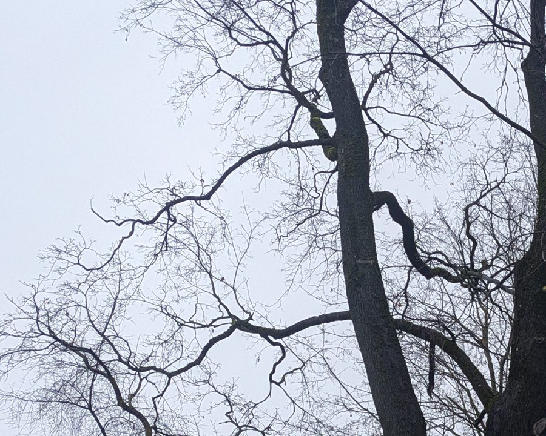
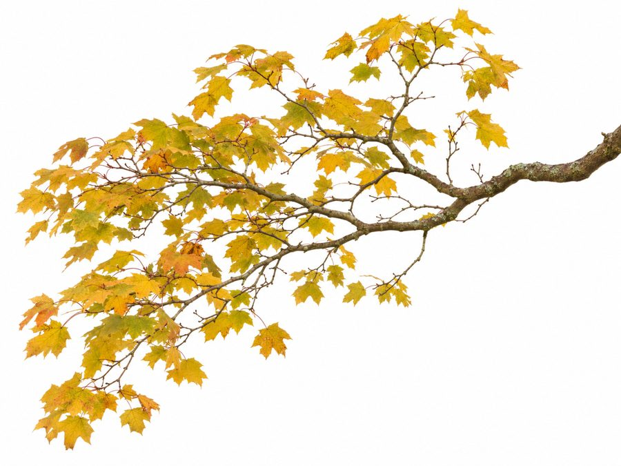
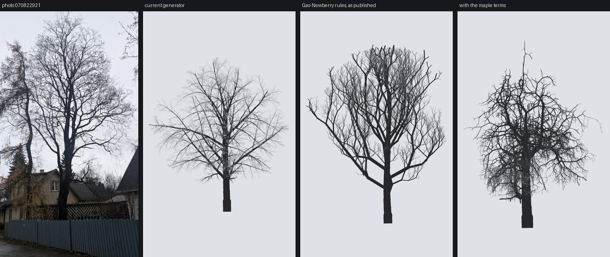
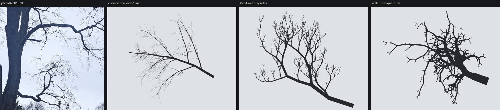
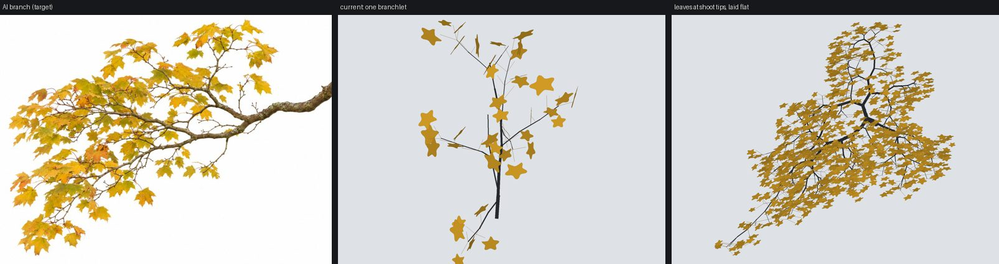
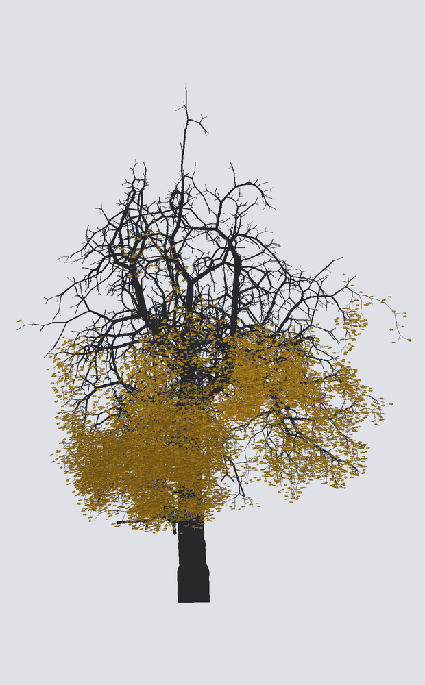
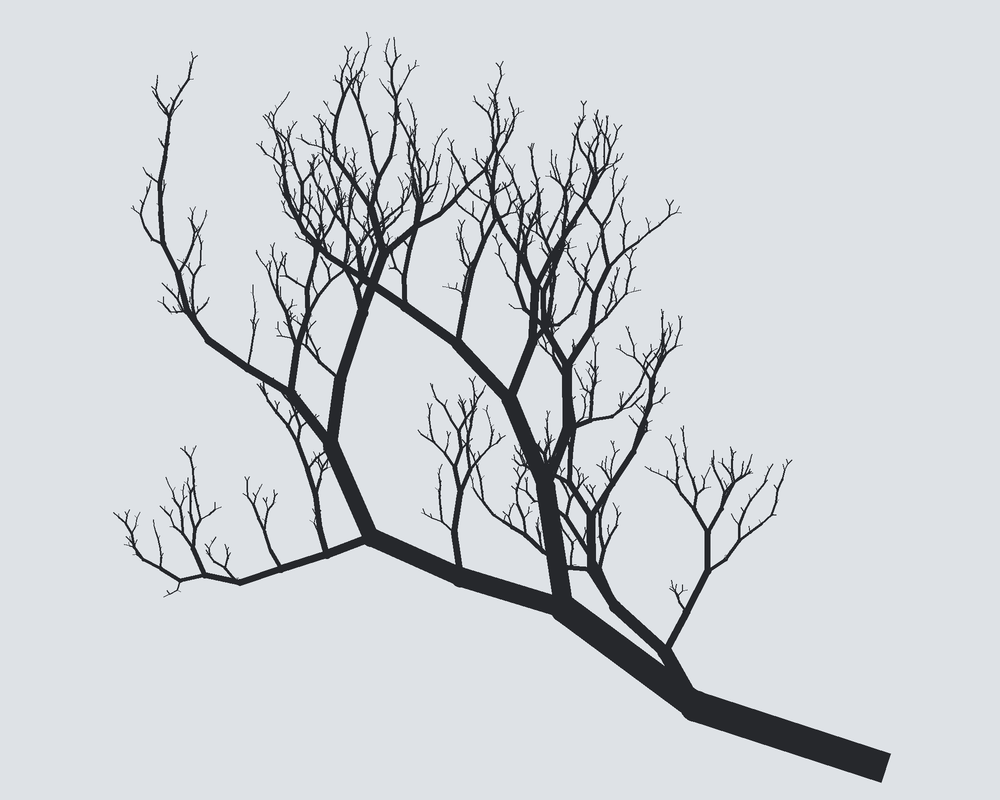
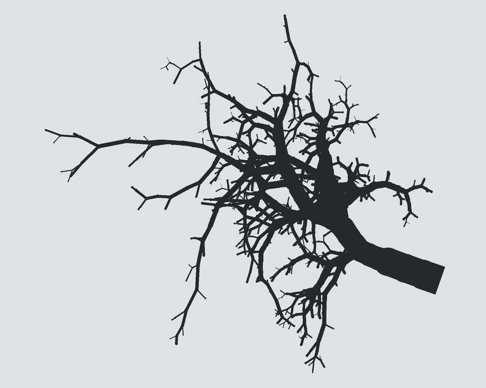

Task 115, 2026-11-24, branch room-light. CPU only: the current tree from tools/tree_dump
(built with python3 scripts/mac.py tools/tree_dump.goose), the prototypes in Python
(src/proto.py, src/current.py, src/draw.py), drawn by Pillow.
Recommendation. Keep the generator's frame (trunk, hero limbs, the hanging limb, the envelope, culling, dice per branch) and replace the branching rule below the limbs with the asymmetric fork of Gao and Newberry 2025 (code: grove.js, 38 lines), taken to 3D, with the per-segment tropism of Palubicki et al. 2009 in place of its single "wind" term, broken leaders as in SpeedTree's Break, and the leaves only at the shoot tips in opposite pairs, laid flat. Growth stays at about the current count (40k segments) and well under the 100 ms budget.


The other three PXL photos (070807991, 070831223) show the same tree farther away; user-maple-gold/orange show the full crown in leaf (the oval, the dense shell) and add nothing new about branches.


grow_part bends each segment by a small random ball (crook) and a sine
(wave): noise, never a sharp change of direction. Real limbs are straight runs joined by jumps (broken or
overtaken leaders).start to the tip). Real branches have no levels: each fork splits thickness unevenly, the thick side goes nearly
straight on and the thin side leaves wide. The inner part of a limb is bare.add_cards puts 4 pairs evenly along the outer 80 % of every
twig and turns each blade by roll_ball * 0.9, about ±50°. Real leaves are on the current year's shoot only, at
the tip, and their stalks lay the blades level and facing up.Growth now: 6.5 ms for the whole tree (41k segments, 39k leaves) on the Mac, so there is room for a richer rule.
| Method | What it gives that the photos show | Cost at room-on | Code | Hero limbs / seed | Fit |
|---|---|---|---|---|---|
| Weber and Penn 1995 (ours now) | Overall shape, envelope (pruning), curve and "attraction up" per level. Levels make it regular; no broken leaders. | 6.5 ms now | Blender Sapling (GPL), tree-gen (GPL) | Full / yes | Is the frame we keep. |
| Gao and Newberry 2025 | Natural look from two rules: thickness by Leonardo's rule (rα kept at each fork, α 2-2.5) and the fork's angles from its asymmetry (thin side atan(a), thick side atan(1/a)); the leader zig-zags because the thick side also turns a little. Its trees all grow up because one "wind" term pulls every branch to 81°. | Same order as now (~n ≈ (r₀/rmin)α tips) | treescale, grove.js (GPL-3, 2D, 38 lines) | Below the limbs; seed per node | Drops into grow_part. For the maple: replace "wind" by a thickness-dependent tropism (thick wood up, thin wood
level and sagging), roll the fork plane a quarter turn each time (opposite buds), length by elastic similarity
(r2/3) so twigs are slender. |
| Runions et al. 2007, space colonisation | Fills an envelope evenly, branches avoid each other; wood looks wandering, not snapped. | Points × nodes per step; 10-100 ms with a grid, ×3 on phones | Many small ones, e.g. ez-tree's relatives; easy to write | Weak (emergent); yes | A fallback for filling the shell's twigs if forks leave holes. |
| Palubicki et al. 2009, self-organising trees | Buds compete for light (shadow grid), Borchert-Honda allocation (apical control), tropism vector per internode, shedding of shaded branches: bare inner limbs, crown shell, natural asymmetry. | Iterative over years: 100s of ms to seconds | No public code found | Weak; yes | Too slow whole; borrow its tropism term and its shadow grid for dieback. |
| Pirk et al. 2012, plastic trees | Bends an existing tree away from a wall and toward light. | Cheap after growth | None public | Full; yes | The house wall:
bend instead of cutting branches at WALL_GAP. Later. |
| Stava et al. 2014, inverse procedural | Fits a parametric model's terms to a given tree. | Offline (MCMC) | None public | n/a | Not for us; its parametric model lists the useful terms (apical control, tropisms, shedding). |
| SpeedTree | Per-generator spines with jink (sharp kinks), gnarl, Break chance (a capped broken end), forks. | Offline tool | Closed | Full | Names the features we lack: kinks and breaks. |
| ez-tree | Weber-Penn-like levels with gnarl and twist. | ms | MIT, JS | Full | Same limits as ours; nothing to take. |
| Learned (autoregressive, diffusion) | Skeletons from data or an image. | Needs a model | Research code | Weak | No. |
Botany behind the terms: Norway maple has opposite, decussate buds and terminal flower clusters (Trees and Shrubs Online), so a flowering shoot ends and the two buds below it fork (Y-forks, twig fans). Old trees build their crown by reiteration: a broken or overtaken leader is replaced by a side shoot, leaving a stub and a jump in direction (Barthélémy and Caraglio 2007). Leonardo's rule for thickness: Eloy 2011.
Follows Gao and Newberry 2025 for the forks and thickness, with Palubicki et al. 2009's tropism per segment. Each step is
behind a tuner switch and checked on the CPU against the photos (a silhouette from tools/tree_dump drawn by
src/current.py) before the GPU.
| Step | Visual effect | Cost | Check |
|---|---|---|---|
1. Forks below the limbs: each node splits in two, asymmetry a in 1..6, radii by rα (α 2.3), angles atan(a) and
atan(1/a), fork plane a quarter turn from the last, length ∝ r2/3, stop at rmin 6 mm or the envelope.
Replaces levels 2-4 and Habit's counts. | Zig-zag leaders, Y-forks, twig fans; no even spacing. | Same segment count; ~100 lines | Limb silhouette against PXL 070810793. |
| 2. Tropism per segment by thickness: thick wood rises, thin long wood levels out and sags, side shoots lean out of the crown. | Spreading limbs with drooping twig fans. | Free | Same, and the whole tree against 070822921. |
| 3. Broken leaders: in mid-size wood (5-35 cm), a chance per fork (~6 %) that the thick side ends as a stub and the thin side takes over, thicker, turned 30-50°. Thick forks near even (a ≤ 1.7) above the trunk, for codominant stems. | Elbows, stubs, the old tree's forked crown. | Free | Count elbows per limb in the photo (1-3) and ours. |
4. Length from room: a fork's length also scales with the room ahead to the envelope (crown_ahead), so the tips
reach the shell instead of stopping short. | A full oval crown; the prototype's crown has gaps at the top without it. | One envelope test per fork | Bare silhouette's outline against the envelope. |
| 5. Dieback in the core: thin wood deep in the crown dies, some as short stubs; later, a coarse shadow grid (Palubicki) instead of the envelope depth. | Bare inner limbs, the twigs in the shell. | Grid 32³, a few ms | Inner third of each limb bare, as in the photos. |
| 6. Leaves at the tips: on each tip, the current shoot (10 cm) with its tip pair and one pair a quarter turn below; stalks longer for leaves pointing down; blades level, facing up and a little to the sun (±15°), not ±50°. | Level plates of leaves at branch ends, bare wood between. | Same card count (~40k) | Leafy branch against ai-branch-canopy and tartu-maple-1. |
A quick Python prototype of steps 1, 2, 3, 5 and 6 (no step 4), not tuned. Python grows the whole tree in 1.5 s; the same work in Goose at C speed is in the tens of ms. Counts: 33k segments bare, 42k leaves.



